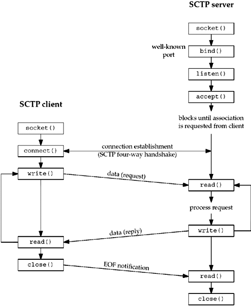
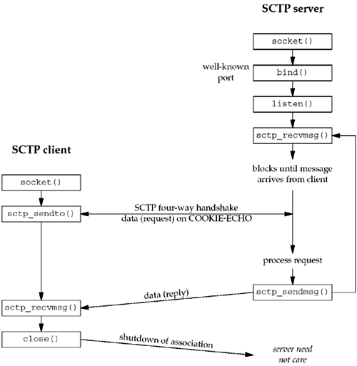

9.2 Interface Models
There are two types of SCTP sockets: a one-to-one socket and a one-to-many socket. A one-to-one socket corresponds to exactly one SCTP association. (Recall from Section 2.5 that an SCTP association is a connection between two systems, but may involve more than two IP addresses due to multihoming.) This mapping is similar to the relationship between a TCP socket and a TCP connection. With a one-to-many socket, several SCTP associations can be active on a given socket simultaneously. This mapping is similar to the manner in which a UDP socket bound to a particular port can receive interleaved datagrams from several remote UDP endpoints that are all simultaneously sending data.
When deciding which style of interface to use, the application needs to consider several factors, including:
What type of server is being written, iterative or concurrent? How many socket descriptors does the server wish to manage? Is it important to optimize the association setup to enable data on the third (and possibly fourth) packet of the four-way handshake? How much connection state does the application wish to maintain? When the sockets API for SCTP was under development, different terminology was used for the two styles of sockets, and readers may sometimes encounter these older terms in documentation or source code. The original term for the one-to-one socket was a "TCP-style" socket, and the original term for a one-to-many socket was a "UDP-style" socket. These style terms were later dropped because they tended to cause confusion by creating expectations that SCTP would behave more like TCP or UDP, depending on which style of socket was used. In fact, these terms referred to only one aspect of the differences between TCP and UDP sockets (i.e., whether a socket supports multiple concurrent transport-layer associations). The current terminology ("one-to-one" versus "one-to-many") focuses our attention on the key difference between the two socket styles. Finally, note that some writers use the term "many-to-one" instead of "one-to-many"; the terms are interchangeable.
The One-to-One Style
The one-to-one style was developed to ease the porting of existing TCP applications to SCTP. It provides nearly an identical model to that described in Chapter 4. There are some differences one should be aware of, especially when porting existing TCP applications to SCTP using this style.
Any socket options must be converted to the SCTP equivalent. Two commonly found options are TCP_NODELAY and TCP_MAXSEG. These can be easily mapped to SCTP_NODELAY and SCTP_MAXSEG. SCTP preserves message boundaries; thus, application-layer message boundaries are not required. For example, an application protocol based on TCP might do a write() system call to write a two-byte message length field, x, followed by a write() system call that writes x bytes of data. However, if this is done with SCTP, the receiving SCTP will receive two separate messages (i.e., the read call will return twice: once with a two-byte message, and then again with an x byte message). Some TCP applications use a half-close to signal the end of input to the other side. To port such applications to SCTP, the application-layer protocol will need to be rewritten so that the application signals the end of input in the application data stream. The send function can be used in the normal fashion. For the sendto and sendmsg functions, any address information included is treated as an override of the primary destination address (see Section 2.8).
A typical user of the one-to-one style will follow the timeline shown in Figure 9.1. When the server is started, it opens a socket, binds to an address, and waits for a client connection with the accept system call. Sometime later, the client is started, it opens a socket, and initiates an association with the server. We assume the client sends a request to the server, the server processes the request, and the server sends back a reply to the client. This cycle continues until the client initiates a shutdown of the association. This action closes the association, whereupon the server either exits or waits for a new association. As can be seen by comparison to a typical TCP exchange, an SCTP one-to-one socket exchange proceeds in a fashion similar to that shown in Figure 4.1.

A one-to-one-style SCTP socket is an IP socket (family AF_INET or AF_INET6), with type SOCK_STREAM and protocol IPPROTO_SCTP.
The One-to-Many Style
The one-to-many style provides an application writer the ability to write a server without managing a large number of socket descriptors. A single socket descriptor will represent multiple associations, much the same way that a UDP socket can receive messages from multiple clients. An association identifier is used to identify a single association on a one-to-many-style socket. This association identifier is a value of type sctp_assoc_t; it is normally an integer. It is an opaque value; an application should not use an association identifier that it has not previously been given by the kernel. Users of the one-to-many style should keep the following issues in mind:
When the client closes the association, the server side will automatically close as well, thus removing any state for the association inside the kernel. Using the one-to-many style is the only method that can be used to cause data to be piggybacked on the third or fourth packet of the four-way handshake (see Exercise 9.3). Any sendto, sendmsg, or sctp_sendmsg to an address for which an association does not yet exist will cause an active open to be attempted, thus creating (if successful) a new association with that address. This behavior occurs even if the application doing the send has called the listen function to request a passive open. The user must use the sendto, sendmsg, or sctp_sendmsg functions, and may not use the send or write function. (If the sctp_peeloff function is used to create a one-to-one-style socket, send or write may be used on it.) Anytime one of the send functions is called, the primary destination address that was chosen by the system at association initiation time (Section 2.8) will be used unless the MSG_ADDR_OVER flag is set by the caller in a supplied sctp_sndrcvinfo structure. To supply this, the caller needs to use the sendmsg function with ancillary data, or the sctp_sendmsg function. Association events (one of a number of SCTP notifications discussed in Section 9.14) may be enabled, so if an application does not wish to receive these events, it should disable them explicitly using the SCTP_EVENTS socket option. By default, the only event that is enabled is the sctp_data_io_event, which provides ancillary data to the recvmsg and sctp_recvmsg call. This default setting applies to both the one-to-one and one-to-many style. When the SCTP sockets API was first developed, the one-to-many-style interface was defined to have the association notification turned on by default as well. Later versions of the API document have since disabled all notifications except the sctp_data_io_event for both the one-to-one- and one-to-many-style interface. However not all implementations may have this behavior. It is always good practice for an application writer to explicitly disable (or enable) the notifications that are unwanted (or desired). This explicit approach assures the developer that the expected behavior will result no matter which OS the code is ported to.
A typical one-to-many style timeline is depicted in Figure 9.2. First, the server is started, creates a socket, binds to an address, calls listen to enable client associations, and calls sctp_recvmsg, which blocks waiting for the first message to arrive. A client opens a socket and calls sctp_sendto, which implicitly sets up the association and piggybacks the data request to the server on the third packet of the four-way handshake. The server receives the request, and processes and sends back a reply. The client receives the reply and closes the socket, thus closing the association. The server loops back to receive the next message.

This example shows an iterative server, where (possibly interleaved) messages from many associations (i.e., many clients) can be processed by a single thread of control. With SCTP, a one-to-many socket can also be used in conjunction with the sctp_peeloff function (see Section 9.12) to allow the iterative and concurrent server models to be combined as follows:
The sctp_peeloff function can be used to peel off a particular association (for example, a long-running session) from a one-to-many socket into its own one-to-one socket. The one-to-one socket of the extracted association can then be dispatched to its own thread or forked process (as in the concurrent model). Meanwhile, the main thread continues to handle messages from any remaining associations in an iterative fashion on the original socket.
A one-to-many-style SCTP socket is an IP socket (family AF_INET or AF_INET6) with type SOCK_SEQPACKET and protocol IPPROTO_SCTP.
|